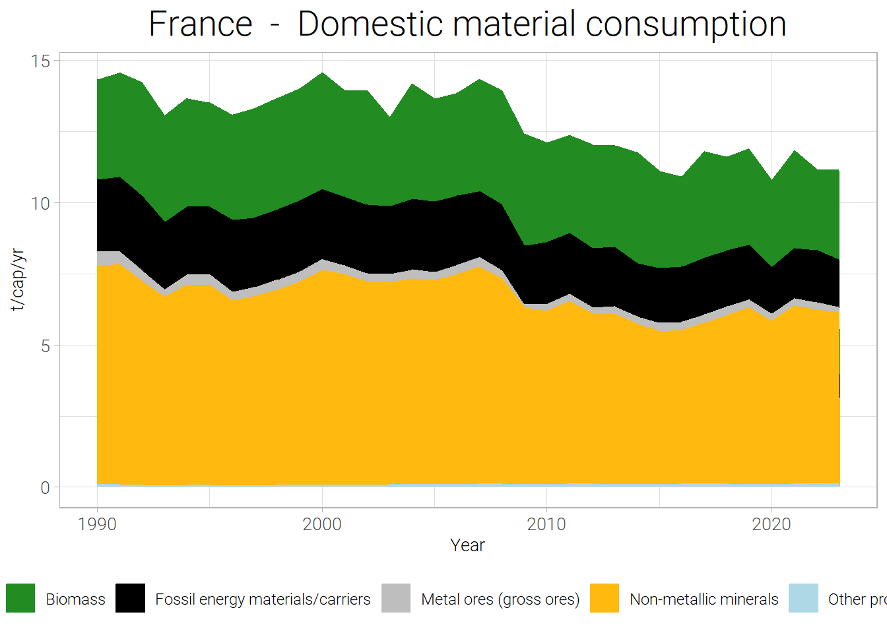

![]()
# Téléchargement des données de Comptabilité de Flux de Matières
if(!(file.exists(here("data","external", "mfa_data.csv")))){
# Si les données ne sont pas sauvegardées, on les
# acquiert et les sauvegarde
mfa_data <- get_eurostat("env_ac_mfa", # Utilise la fonction get_eurostat qui nécessite le code du jeu de donnée
time_format = "num")
mfa_data_labeled = label_eurostat(mfa_data) # Récupère les labels de variables
write.csv(mfa_data_labeled, # Sauvegargde les données localement
here('data', 'external', 'mfa_data.csv'),
row.names = F)
}else{
# Sinon, les données sont lues
mfa_data_labeled = read.csv(here('data', 'external', 'mfa_data.csv'))
}
# Même mécanisme pour les données de PIB
if(!(file.exists(here("data","external", "gdp_data_filtered.csv")))){
gdp_data <- get_eurostat("nama_10_gdp",
time_format = "num")
gdp_data_filtered = gdp_data %>%
filter(na_item == "B1GQ" &
unit == "CP_MEUR")
gdp_data_labeled = label_eurostat(gdp_data_filtered)
gdp_data_full_labeled = label_eurostat(gdp_data)
write.csv(gdp_data_labeled,
here('data', 'external', 'gdp_data_filtered.csv'),
row.names = F)
write.csv(gdp_data_full_labeled,
here('data', 'external', 'gdp_data_full_labeled.csv'),
row.names = F)
}else{
gdp_data_labeled = read.csv(here('data', 'external', 'gdp_data_filtered.csv'))
gdp_data_full_labeled = read.csv(here('data', 'external', 'gdp_data_full_labeled.csv'))
}Analyse du métabolisme eosical
A. Objectifs de l’Atelier
- Accéder et préparer les données Eurostat sur les flux de matières
- Calculer les indicateurs métaboliques clés
- Visualiser et comparer les profils métaboliques
- Analyser les tendances et les schémas
- Simuler des interventions politiques de base
1. Acquisition
- On accède à Eurostat grâce au package
eurostat- Trouvez le code du jeu de données pour les données MFA et les données de PIB sur le site web
- Complétez le code en dessous
# Define your category vectors (if not already defined)
biomass <- c("Biomass",
"Crops (excluding fodder crops)",
"Cereals",
"Roots, tubers",
"Sugar crops",
"Pulses",
"Nuts",
"Oil-bearing crops",
"Vegetables",
"Fruits",
"Fibres",
"Other crops (excluding fodder crops) n.e.c.",
"Crop residues (used), fodder crops and grazed biomass",
"Crop residues (used)",
"Straw",
"Other crop residues (sugar and fodder beet leaves, etc.)",
"Fodder crops and grazed biomass",
"Fodder crops (including biomass harvest from grassland)",
"Grazed biomass",
"Wood",
"Timber (industrial roundwood)",
"Wood fuel and other extraction",
"Wild fish catch, aquatic plants and animals, hunting and gathering",
"Wild fish catch",
"All other aquatic animals and plants",
"Hunting and gathering",
"Live animals and animal products (excluding wild fish, aquatic plants and animals, hunted and gathered animals)",
"Live animals (excluding wild fish, aquatic plants and animals, hunted and gathered animals)",
"Meat and meat preparations",
"Dairy products, birds' eggs, and honey",
"Other products from animals (animal fibres, skins, furs, leather, etc.)",
"Products mainly from biomass"
)
metals <- c("Metal ores (gross ores)",
"Iron",
"Non-ferrous metal",
"Copper",
"Nickel",
"Lead",
"Zinc",
"Tin",
"Gold, silver, platinum and other precious metals",
"Bauxite and other aluminium",
"Uranium and thorium",
"Other non-ferrous metals",
"Products mainly from metals"
)
non_metallic_minerals <- c("Non-metallic minerals",
"Marble, granite, sandstone, porphyry, basalt, other ornamental or building stone (excluding slate)",
"Chalk and dolomite",
"Slate",
"Chemical and fertiliser minerals",
"Salt",
"Limestone and gypsum",
"Clays and kaolin",
"Sand and gravel",
"Other non-metallic minerals n.e.c.",
"Products mainly from non metallic minerals"
)
fossil_energy <- c("Fossil energy materials/carriers",
"Coal and other solid energy materials/carriers",
"Lignite (brown coal)",
"Hard coal",
"Oil shale and tar sands",
"Peat",
"Liquid and gaseous energy materials/carriers",
"Crude oil, condensate and natural gas liquids (NGL)",
"Natural gas",
"Fuels bunkered (imports: by resident units abroad); (exports: by non-resident units domestically)",
"Fuel for land transport",
"Fuel for water transport",
"Fuel for air transport",
"Products mainly from fossil energy products"
)
other_products <- c("Other products",
"Waste for final treatment and disposal",
"Stage of manufacturing - finished products",
"Stage of manufacturing - raw products",
"Stage of manufacturing - semi-finished products"
)
category_list <- list(
"Biomass" = biomass,
"Metals" = metals,
"Non-metallic minerals" = non_metallic_minerals,
"Fossil energy carriers" = fossil_energy,
"Other products" = other_products
)Biomass
df_cat <- data.frame(Material = category_list[["Biomass"]]) # fait un dataframe pour afficher plus facilement les données
print(kable(df_cat, caption = paste("Catégorie : Biomass"))) # Imprimées par kable, package pour faire des tables
Table: Catégorie : Biomass
|Material |
|:---------------------------------------------------------------------------------------------------------------|
|Biomass |
|Crops (excluding fodder crops) |
|Cereals |
|Roots, tubers |
|Sugar crops |
|Pulses |
|Nuts |
|Oil-bearing crops |
|Vegetables |
|Fruits |
|Fibres |
|Other crops (excluding fodder crops) n.e.c. |
|Crop residues (used), fodder crops and grazed biomass |
|Crop residues (used) |
|Straw |
|Other crop residues (sugar and fodder beet leaves, etc.) |
|Fodder crops and grazed biomass |
|Fodder crops (including biomass harvest from grassland) |
|Grazed biomass |
|Wood |
|Timber (industrial roundwood) |
|Wood fuel and other extraction |
|Wild fish catch, aquatic plants and animals, hunting and gathering |
|Wild fish catch |
|All other aquatic animals and plants |
|Hunting and gathering |
|Live animals and animal products (excluding wild fish, aquatic plants and animals, hunted and gathered animals) |
|Live animals (excluding wild fish, aquatic plants and animals, hunted and gathered animals) |
|Meat and meat preparations |
|Dairy products, birds' eggs, and honey |
|Other products from animals (animal fibres, skins, furs, leather, etc.) |
|Products mainly from biomass |Metals
df_cat <- data.frame(Material = category_list[["Metals"]])
print(kable(df_cat, caption = paste("Catégorie : Metals")))
Table: Catégorie : Metals
|Material |
|:------------------------------------------------|
|Metal ores (gross ores) |
|Iron |
|Non-ferrous metal |
|Copper |
|Nickel |
|Lead |
|Zinc |
|Tin |
|Gold, silver, platinum and other precious metals |
|Bauxite and other aluminium |
|Uranium and thorium |
|Other non-ferrous metals |
|Products mainly from metals |Non-metallic minerals
df_cat <- data.frame(Material = category_list[["Non-metallic minerals"]])
print(kable(df_cat, caption = paste("Catégorie : Non-metallic minerals")))
Table: Catégorie : Non-metallic minerals
|Material |
|:--------------------------------------------------------------------------------------------------|
|Non-metallic minerals |
|Marble, granite, sandstone, porphyry, basalt, other ornamental or building stone (excluding slate) |
|Chalk and dolomite |
|Slate |
|Chemical and fertiliser minerals |
|Salt |
|Limestone and gypsum |
|Clays and kaolin |
|Sand and gravel |
|Other non-metallic minerals n.e.c. |
|Products mainly from non metallic minerals |Fossil energy carriers
df_cat <- data.frame(Material = category_list[["Fossil energy carriers"]])
print(kable(df_cat, caption = paste("Catégorie : Fossil energy carriers")))
Table: Catégorie : Fossil energy carriers
|Material |
|:-------------------------------------------------------------------------------------------------|
|Fossil energy materials/carriers |
|Coal and other solid energy materials/carriers |
|Lignite (brown coal) |
|Hard coal |
|Oil shale and tar sands |
|Peat |
|Liquid and gaseous energy materials/carriers |
|Crude oil, condensate and natural gas liquids (NGL) |
|Natural gas |
|Fuels bunkered (imports: by resident units abroad); (exports: by non-resident units domestically) |
|Fuel for land transport |
|Fuel for water transport |
|Fuel for air transport |
|Products mainly from fossil energy products |Other products
df_cat <- data.frame(Material = category_list[["Other products"]])
print(kable(df_cat, caption = paste("Catégorie : Other products")))
Table: Catégorie : Other products
|Material |
|:-----------------------------------------------|
|Other products |
|Waste for final treatment and disposal |
|Stage of manufacturing - finished products |
|Stage of manufacturing - raw products |
|Stage of manufacturing - semi-finished products |C. Visualisation des indicateurs par pays
- Répartissez vous en groupe de deux
- Ecrivez une fonction pour représenter les indicateurs clés de l’analyse MFA comme chez Magalhaes (ou dans le MFA): Domestic extraction, Direct material inputs, domestic consumption, imports and exports
- Choisissez un pays dans l’UE et sortez son profil métabollique dans les dernières années
Code
summary_classes = c('Biomass', 'Metal ores (gross ores)', 'Non-metallic minerals',
'Fossil energy materials/carriers', 'Other products')
# Classes qui résument les données, qui sont plus riches
# Faites :
# unique(mfa_data_labeled$material)
# Pour voir l'intégralité des flux
visualizer = function(country, variable, data_ = mfa_data_labeled){
#' Visualizer Function for MFA Indicators
#'
#' Cette fonction génère un graphique ggplot représentant l'évolution temporelle
#' d'un indicateur clé du MFA pour un pays donné.
#'
#' @param country Caractère. Le code du pays à analyser (ex : "France").
#' @param variable Caractère. L'indicateur environnemental à visualiser
#' (ex : "Domestic extraction", "Direct material inputs", etc.).
#' @param data_ Data frame. Jeu de données contenant les informations MFA.
#' Par défaut, il s'agit de `mfa_data_labeled`.
#'
#' @return Un objet ggplot représentant le graphique de l'indicateur sélectionné.
#'
#' @examples
#' visualizer("France", "Domestic extraction")
p = data_%>%
subset(geo == country)%>% # On choisit les pays
subset(unit == "Tonnes per capita")%>% # On garde les tonnes par tête
subset(indic_env == variable)%>% # Choisit la variable
subset(material %in% summary_classes)%>% # Récupère les données agrégées
ggplot(aes(x=TIME_PERIOD, y=values, fill = material, color = material))+
geom_area()+ # Fait un plot stacked
scale_fill_manual(values = palette_mfa)+
scale_color_manual(values = palette_mfa)+
custom_theme()+
ylab('t/cap/yr')+
xlab('Year')+
labs(color=NULL,
fill = NULL)+
ggtitle(paste(country, ' - ', variable))
return(p)
}DE
visualizer("France", "Domestic extraction")Warning: Removed 34 rows containing non-finite outside the scale range
(`stat_align()`).DMI
visualizer("France", "Direct material inputs")DMC
visualizer("France", "Domestic material consumption")
Imports
visualizer("France", "Imports")Exports
visualizer("France", "Exports")D. Comparaison des profils pays dans le temps
1. Par indicateurs
countries_to_compare = c('France', 'Spain', 'Germany', 'Estonia', 'Italy', 'Greece','Finland')
palette_countries = palette.colors(length(countries_to_compare))
comparison_visualiser = function(countries = countries_to_compare,
indic_env_,
unit_){
#' Comparison Visualiser Function
#'
#' Cette fonction génère un graphique ggplot qui compare l'évolution d'un indicateur du MFA
#' pour une sélection de pays. Les données sont filtrées par pays, indicateur environnemental,
#' unité de mesure et matériaux, puis agrégées par pays et par période.
#'
#' @param countries Vecteur de caractères. Liste des pays à comparer. Par défaut, la variable `countries_to_compare`.
#' @param indic_env_ Caractère. Indicateur environnemental à comparer (ex : "Domestic extraction", "Direct material inputs", etc.).
#' @param unit_ Caractère. Unité de mesure utilisée pour l'indicateur (ex : "Tonnes per capita").
#'
#' @return Un objet ggplot représentant l'évolution de l'indicateur pour chacun des pays sélectionnés.
#'
#' @examples
#' comparison_visualiser(countries = c('France', 'Germany'),
#' indic_env_ = "Domestic extraction",
#' unit_ = "Tonnes per capita")
p = mfa_data_labeled %>%
subset(geo %in% countries_to_compare) %>% # Filtrer les données pour ne garder que les pays sélectionnés
subset(indic_env == indic_env_) %>% # Conserver uniquement l'indicateur environnemental spécifié
subset(unit == unit_) %>% # Garder les données dans l'unité de mesure indiquée
subset(material %in% summary_classes) %>% # Filtrer pour ne conserver que les matériaux agrégés définis dans summary_classes
group_by(geo, TIME_PERIOD) %>% # Grouper par pays et par période
mutate(overall = sum(values, na.rm = TRUE)) %>% # Calculer la somme des valeurs par groupe (agrégation)
ungroup() %>% # Dégroupement
select(c('TIME_PERIOD', 'geo', 'overall')) %>% # Sélectionner les variables d'intérêt
ggplot(aes(x = TIME_PERIOD, # Définir l'axe des abscisses : la période (année)
y = overall, # Définir l'axe des ordonnées : la valeur agrégée
color = geo)) + # Colorer les lignes par pays
geom_line(linewidth = 1) + # Ajouter une ligne pour représenter l'évolution
scale_color_manual(values = unname(palette_countries)) + # Définir manuellement les couleurs pour chaque pays
custom_theme() + # Appliquer le thème personnalisé
ylab(paste(indic_env_, "in", unit_)) + # Ajouter une étiquette à l'axe des ordonnées indiquant l'indicateur et l'unité
xlab(" ") + # Laisser l'axe des abscisses sans titre
labs(color = NULL) # Supprimer le titre de la légende pour les couleurs
return(p)
}comparison_visualiser(indic_env_ = "Domestic extraction", unit_ = "Tonnes per capita")comparison_visualiser(indic_env_ = "Direct material inputs", unit_ = "Tonnes per capita")comparison_visualiser(indic_env_ = "Domestic material consumption", unit_ = "Tonnes per capita")comparison_visualiser(indic_env_ = "Physical trade balance", unit = "Tonnes per capita")+
geom_hline(yintercept = 0, linetype='dotted')2. Productivité des ressources
\[ \frac{PIB}{DMI}\]
- Choisissez un échantillon de pays utile à comparer en Europe
- Calculez leurs productivités des ressources
- Montrez leur évolution dans le temps
countries_to_compare = c('France', 'Spain', 'Germany', 'Estonia', 'Italy', 'Greece','Finland')
palette_countries = palette.colors(length(countries_to_compare))
# Filtrer et agréger les données pour obtenir le total des Direct Material Inputs (DMI)
# pour chaque pays et pour chaque période, en utilisant uniquement les matériaux
# inclus dans la liste summary_classes, exprimées en 'Thousand tonnes'.
efficiency_data = mfa_data_labeled %>%
# Conserver uniquement les pays spécifiés dans countries_to_compare
subset(geo %in% countries_to_compare) %>%
# Filtrer pour l'indicateur "Direct material inputs"
subset(indic_env == "Direct material inputs") %>%
# Filtrer pour garder uniquement les données dont l'unité est "Thousand tonnes"
subset(unit == 'Thousand tonnes') %>%
# Conserver uniquement les matériaux inclus dans summary_classes
subset(material %in% summary_classes) %>%
# Regrouper les données par pays et par période (année)
group_by(geo, TIME_PERIOD) %>%
# Calculer la somme des valeurs pour chaque groupe, ce qui donne le total des DMI
mutate(overall = sum(values)) %>%
# Dégroupement pour faciliter la manipulation ultérieure
ungroup() %>%
# Sélectionner uniquement les colonnes d'intérêt : année, pays et la valeur agrégée
select(c('TIME_PERIOD', 'geo', 'overall'))efficiency_data %>%
ggplot(aes(x = TIME_PERIOD, y = overall, color = geo))+
geom_line(linewidth=1)+
scale_color_manual(values = unname(palette_countries))+
custom_theme()+
ylab('DMI in thousand tonnes')+
xlab(" ")+
labs(color=NULL)# Fusionner les données de PIB (gdp_data_labeled) avec les données d'efficacité (efficiency_data)
# en utilisant TIME_PERIOD et geo comme clés communes.
productivity_data = full_join(gdp_data_labeled, efficiency_data, by = c("TIME_PERIOD", "geo"))
# Préparer et visualiser la productivité matérielle (PIB / Direct Material Inputs)
productivity_data %>%
# Filtrer pour ne conserver que les pays spécifiés dans countries_to_compare
subset(geo %in% countries_to_compare) %>%
# Supprimer les lignes contenant des valeurs manquantes pour éviter des problèmes de calcul
drop_na() %>%
# Créer une nouvelle variable 'Productivité' en divisant la valeur du PIB par la somme des DMI
mutate(Productivité = values / overall) %>%
# Construire un graphique avec ggplot2
ggplot(aes(x = TIME_PERIOD, y = Productivité, color = geo)) +
geom_line(linewidth = 1) + # Tracer des lignes pour représenter l'évolution de la productivité dans le temps
scale_color_manual(values = unname(palette_countries)) + # Attribuer manuellement une couleur à chaque pays
custom_theme() + # Appliquer le thème personnalisé défini dans custom_theme()
ylab('Productivity (million €/thousand tonne)') + # Étiquette pour l'axe des ordonnées
xlab(" ") + # Laisser l'axe des abscisses sans titre (ou espace vide)
labs(color = NULL) # Supprimer le titre de la légende pour les couleurs3. Efficacité matérielle
\[\frac{PIB}{DMC}\]
- En utilisant les mêmes techniques, calculez l’efficacité matérielle
- Quelle est la différence entre les deux mesures?
Code
performance = function(indic_env_, indicator, countries = countries_to_compare){
#' Performance Visualiser Function
#'
#' Cette fonction calcule et visualise une mesure de performance en joignant les données
#' de flux de matières (MFA) et les données de PIB. La performance est calculée en divisant
#' une variable économique (PIB) par une agrégation d'une variable MFA (par exemple, DMC ou DMI)
#' pour chaque pays et chaque période. Le résultat est visualisé sous forme de graphique linéaire.
#'
#' @param indic_env_ Caractère. L'indicateur MFA à utiliser (par exemple, "Domestic material consumption").
#' @param indicator Caractère. Le libellé de l'indicateur qui sera affiché sur l'axe des ordonnées (par exemple, "Efficiency (million €/thousand tonne)").
#' @param countries Vecteur de caractères. La liste des pays à analyser. Par défaut, utilise `countries_to_compare`.
#'
#' @return Un objet ggplot représentant l'évolution temporelle de la mesure de performance calculée pour chaque pays.
#'
#' @examples
#' performance("Domestic material consumption", "Efficiency (million €/thousand tonne)")
# Filtrer les données MFA pour les pays sélectionnés, l'indicateur spécifié, l'unité "Thousand tonnes"
# et pour les matériaux définis dans summary_classes.
p = mfa_data_labeled %>%
subset(geo %in% countries) %>% # Conserver uniquement les données des pays d'intérêt
subset(indic_env == indic_env_) %>% # Filtrer selon l'indicateur MFA souhaité
subset(unit == 'Thousand tonnes') %>% # Garder uniquement les observations en "Thousand tonnes"
subset(material %in% summary_classes) %>% # Filtrer pour ne conserver que les matériaux agrégés
group_by(geo, TIME_PERIOD) %>% # Grouper par pays et période pour agrégation
mutate(overall = sum(values)) %>% # Calculer la somme des valeurs pour chaque groupe
ungroup() %>%
select(c('TIME_PERIOD', 'geo', 'overall')) %>% # Sélectionner les colonnes d'intérêt
# Fusionner les données agrégées avec les données de PIB sur les colonnes TIME_PERIOD et geo.
full_join(gdp_data_labeled, by = c("TIME_PERIOD", "geo")) %>%
subset(geo %in% countries_to_compare) %>% # S'assurer que seuls les pays d'intérêt sont conservés
drop_na() %>% # Supprimer les observations comportant des valeurs manquantes
mutate(new_var = values / overall) %>% # Calculer la performance : PIB divisé par l'agrégation MFA
ggplot(aes(x = TIME_PERIOD, y = new_var, color = geo)) + # Construire le graphique avec ggplot2, en assignant TIME_PERIOD à l'axe x, la performance calculée à l'axe y et en colorant par pays
geom_line(linewidth = 1) + # Tracer une ligne pour représenter l'évolution dans le temps
scale_color_manual(values = unname(palette_countries)) + # Attribuer manuellement les couleurs aux pays
custom_theme() + # Appliquer le thème personnalisé défini dans custom_theme()
ylab(indicator) + # Ajouter l'étiquette pour l'axe des ordonnées, correspondant au libellé de la mesure de performance
xlab(" ") + # Laisser l'axe des abscisses sans titre
labs(color = NULL) # Supprimer le titre de la légende
# Retourner le graphique ggplot généré
return(p)
}Illustration
performance("Domestic material consumption", "Efficiency (million €/thousand tonne)")Différence entre les deux mesures
Productivité matérielle (Resource Productivity ou RP):
- Quantité de valeur économique (PIB) générée par unité de matière entrante dans l’économie (DMI).
- capacité à créer de la valeur à partir des matières qui entrent dans le système économique.
- capacité à créer de la valeur à partir des matières qui entrent dans le système économique.
- indicateur d’efficience économique orienté vers la production.
Efficacité matérielle (Material Efficiency ou ME):
- quantité de valeur économique (PIB) générée par unité de matière effectivement consommée par l’économie (DMC).
- focalise sur l’utilisation interne des matières pour créer de la valeur.
- exclut les matières qui sont simplement réexportées
- indicateur d’efficience écologique orienté vers la consommation.
Peuvent diverger significativement pour les économies qui jouent un rôle important dans le commerce international de matières premières ou semi-transformées
4. Découplages matériaux ?
- Calculez les taux de croissance des indicateurs : PIB et métaboliques
- Tracez graphiquement leur évolutions
growth_dmi = mfa_data_labeled %>%
subset(geo %in% countries_to_compare) %>% # Sélectionner uniquement les pays d'intérêt
subset(indic_env == "Direct material inputs") %>% # Garder uniquement les observations pour l'indicateur "Direct material inputs"
subset(unit == 'Thousand tonnes') %>% # Filtrer pour conserver les données en "Thousand tonnes"
subset(material %in% summary_classes) %>% # Ne conserver que les matériaux appartenant aux classes agrégées (summary_classes)
group_by(geo, TIME_PERIOD) %>% # Grouper les données par pays et par période (année)
mutate(overall = sum(values)) %>% # Calculer la somme des valeurs pour chaque groupe (total DMI par pays et par année)
ungroup() %>% # Dégroupement pour les opérations ultérieures
select(indic_env, geo, TIME_PERIOD, overall) %>% # Sélectionner les colonnes pertinentes pour l'analyse
group_by(geo) %>% # Regrouper à nouveau par pays pour calculer la croissance dans le temps
arrange(TIME_PERIOD) %>% # Ordonner les données chronologiquement pour chaque pays
mutate(DMI = (overall / lag(overall) - 1) * 100) %>% # Calculer le taux de croissance en pourcentage : ((valeur actuelle / valeur précédente) - 1) * 100
ungroup() %>% # Dégroupement final
distinct() %>% # Retirer les doublons éventuels
subset(DMI != 0) # Filtrer pour supprimer les observations où le taux de croissance est nulgrowth_gdp = gdp_data_labeled%>%
subset(geo %in% countries_to_compare)%>% # Pays que l'on souhaite conserver
group_by(geo) %>% # Grouping by geo (or another grouping variable)
arrange(TIME_PERIOD) %>% # Ensure the data is in time order
mutate(GDP = (values / lag(values) - 1) * 100) %>% # Compute growth rate in percent
ungroup()%>%
distinct()full_join(growth_gdp, growth_dmi, by = c('TIME_PERIOD', 'geo'))%>%
drop_na()%>%
select(c('geo', 'TIME_PERIOD', 'GDP', 'DMI'))%>%
pivot_longer(-c('geo', 'TIME_PERIOD'),
names_to = 'names',
values_to = 'values')%>%
ggplot(aes(x=TIME_PERIOD, y = values, color = names))+
geom_point(size = 1)+
geom_line()+
facet_wrap(~geo, nrow=2)+
labs(color="Variation rate (in %)")+
custom_theme()+
ylab(" ")+
xlab(" ")+
theme(strip.text = element_text(color = "grey9"))5. Evolutions des demandes de matériaux liés à la transition
- Cuivre :
- Essentiel pour les infrastructures électriques (câblage, moteurs, transformateurs) et les réseaux intelligents.
- Forte demande mondiale due à l’électrification et aux énergies renouvelables, entraînant des risques de tensions d’approvisionnement.
- La concentration géographique de certaines réserves peut accentuer la vulnérabilité aux perturbations géopolitiques.
- Nickel :
- Batteries lithium-ion, cruciales pour le stockage d’énergie et les véhicules électriques.
- Or, argent, platine et métaux précieux :
- Electronique de pointe
- Rareté et la concentration des mines dans certains pays posent des risques d’approvisionnement et de volatilité des prix.
- Bauxite et autre Aluminium :
- Transformation de la bauxite en aluminium
- Légèreté et résistance: matériau de choix pour l’automobile, l’aéronautique et les infrastructures renouvelables.
- Uranium Thorium
- Sources de combustible pour la production d’énergie nucléaire, offrant une solution bas carbone pour la transition énergétique.
- Disponibilité de thorium pourrait offrir des alternatives: nécessite encore des développements technologiques et réglementaires.
- Autres métaux non ferreux :
- Divers éléments critiques utilisés dans la fabrication de composants électroniques, batteries, et technologies renouvelables.
mfa_data_labeled%>%
subset(geo %in% countries_to_compare)%>%
subset(material %in% c('Copper', 'Nickel', "Gold, Silver, Platinum and Other Precious Metal",
"Bauxite and Other Aluminium", "Uranium and Thorium", "Other non ferrous metals"))%>%
subset(indic_env=="Domestic material consumption")%>%
subset(unit=="Thousand tonnes")%>%
ggplot(aes(x = TIME_PERIOD, y = values, color = geo))+
geom_point()+
geom_line()+
scale_color_manual(values = unname(palette_countries))+
facet_wrap(~material, nrow = 2)+
custom_theme()+
ylab("Thousand tonnes")+
xlab(' ')+
ggtitle('Domestic material consumption')+
labs(color = NULL)+
theme(strip.text = element_text(color = "grey9"))Warning: Removed 10 rows containing missing values or values outside the scale range
(`geom_point()`).mfa_data_labeled %>%
# Filtrer pour ne conserver que les pays d'intérêt
subset(geo %in% countries_to_compare) %>%
# Filtrer pour ne garder que les matériaux spécifiques (ex. Copper, Nickel, etc.)
subset(material %in% c('Copper', 'Nickel', "Gold, Silver, Platinum and Other Precious Metal",
"Bauxite and Other Aluminium", "Uranium and Thorium", "Other non ferrous metals")) %>%
# Sélectionner l'indicateur "Domestic material consumption"
subset(indic_env == "Domestic material consumption") %>%
# Filtrer pour conserver uniquement les données exprimées en "Thousand tonnes"
subset(unit == "Thousand tonnes") %>%
# Construire le graphique avec ggplot2
ggplot(aes(x = TIME_PERIOD, # Axe des abscisses : la période (année)
y = values, # Axe des ordonnées : les valeurs de consommation
color = geo)) + # Couleur selon le pays
geom_point() + # Ajouter des points pour chaque observation
geom_line() + # Tracer des lignes reliant les points pour montrer la tendance
scale_color_manual(values = unname(palette_countries)) + # Attribution manuelle des couleurs pour les pays
facet_wrap(~material, nrow = 2) + # Créer une grille de graphiques par matériau, 2 lignes par facette
custom_theme() + # Appliquer le thème personnalisé pour l'esthétique du graphique
ylab("Thousand tonnes") + # Étiquette de l'axe des ordonnées
xlab(' ') + # Laisser l'axe des abscisses sans titre
ggtitle('Domestic material consumption') + # Titre du graphique
labs(color = NULL) + # Supprimer le titre de la légende pour la couleur
theme(strip.text = element_text(color = "grey9")) # Personnaliser la couleur du texte des facettesWarning: Removed 10 rows containing missing values or values outside the scale range
(`geom_point()`).